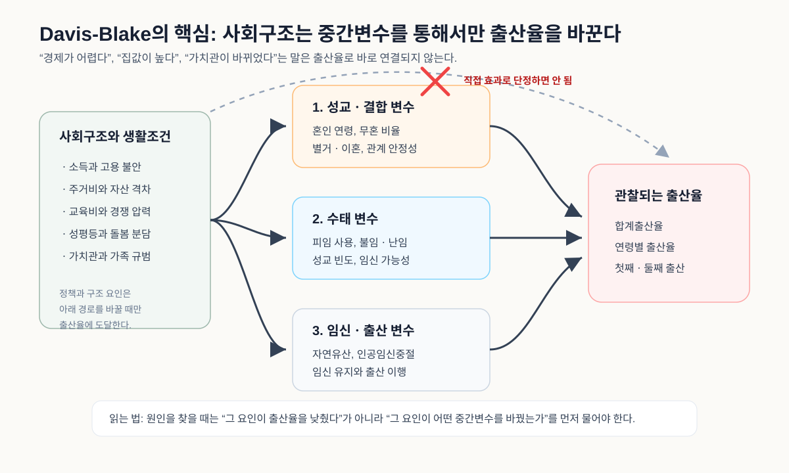

Chapter 6
6.11. 도대체 무엇이 저출산의 핵심요인인가
출산 결정은 어느 날 갑자기 내려지는 선택이 아니라 독립, 주거, 혼인, 임신·출산, 돌봄 복귀가 이어지는 생활시간표 위에서 만들어진다.
익명 의견 남기기
출산율이 낮아진 원인을 하나만 고르라고 하면 대답은 쉬워 보인다. 어떤 사람은 집값을 말하고, 어떤 사람은 일자리와 소득을 말하며, 어떤 사람은 사교육과 경쟁을 말한다. 또 어떤 사람은 결혼관, 젠더 갈등, 긴 노동시간, 보육 공백을 말한다. 모두 맞는 말처럼 들리지만, 바로 그 때문에 정책은 자주 길을 잃는다. 원인이 많다는 말은 때로 아무것도 정확히 설명하지 못한다는 말이 되기 때문이다.
이 절은 출산율 결정 요인을 다룬 대표 모형들을 먼저 정리한 뒤, 한국의 공개자료로 어디까지 계량적으로 옮겨 볼 수 있는지를 점검한다. 목표는 “진짜 원인 하나”를 뽑는 것이 아니다. 출산율은 개인의 결혼과 출산 결정뿐 아니라 가족제도, 노동시장, 주거, 젠더 질서, 복지국가, 교육경쟁, 문화적 가치관이 함께 만들어내는 다층적 결과다. 그러므로 먼저 모형의 지도를 그려야 한다. 어떤 모형은 출산율이 실제로 만들어지는 생물학적·혼인적 경로를 묻고, 어떤 모형은 근대화와 가치관 변화를 묻고, 어떤 모형은 가구의 합리적 선택과 비용을 묻고, 어떤 모형은 성평등과 돌봄의 제도적 배열을 묻는다.
다만 여기서 수행하는 한국 자료 분석은 원 논문의 미시자료나 구조모형을 완전히 복제한 것이 아니다. 한국의 공개 통계에서 비교적 안정적으로 구할 수 있는 시계열과 시도 패널을 사용해, 널리 알려진 이론 경로가 한국 자료에서 어떤 방향으로 나타나는지를 보는 축소 복제(reduced-form replication)에 가깝다. 따라서 아래 계량 결과는 최종 원인 순위가 아니라, 어떤 경로가 자료에서 더 선명하게 드러나는지를 보여주는 탐색적 증거로 읽어야 한다.
이 절에서 사용할 가장 단순한 직관은 다음과 같다.
이 식은 통계적 추정식이라기보다 이론 지도를 압축한 문장이다. 임신 가능성은 혼인·동거·성관계 노출, 피임, 불임, 임신중단과 같은 근접 결정요인을 뜻한다. 출산 의향은 이상 자녀 수, 가족 가치, 부모됨에 대한 태도를 포함한다. 출산 실행 가능성은 주거, 고용, 소득, 돌봄, 교육비, 경력단절 위험처럼 “아이를 낳고 기를 수 있는가”의 문제다. 제도·규범·맥락은 가족정책, 노동시장, 성평등, 교육경쟁, 지역 격차, 사회적 신뢰를 포함한다. 출산율 모형이 여러 개일 수밖에 없는 이유는 이 네 층위가 서로 다른 학문적 질문을 요구하기 때문이다.
1. 출산율은 무엇을 통해 직접 결정되는가: Davis-Blake와 Bongaarts
출산율 모형의 가장 기본적인 출발점은 Davis와 Blake(1956)의 직접 결정요인 또는 중간변수(intermediate variables) 모형이다. 이들은 사회구조가 출산율에 곧바로 영향을 미치는 것이 아니라, 출산에 직접 연결되는 중간변수를 통해서만 영향을 준다고 보았다. 그 중간변수는 크게 세 묶음으로 나뉜다. 첫째는 성교와 결합된 변수, 예컨대 혼인 연령, 무혼 비율, 별거와 이혼이다. 둘째는 수태와 관련된 변수, 예컨대 피임, 불임, 성교 빈도다. 셋째는 임신과 출산 사이의 변수, 예컨대 자연유산과 인공임신중절이다.

이 그림은 Davis-Blake 모형을 읽는 가장 쉬운 방법을 보여준다. 왼쪽의 사회구조와 생활조건은 출산율로 곧바로 뛰어가지 않는다. 소득 불안은 혼인을 늦출 수 있고, 주거비는 동거와 결혼의 안정성을 흔들 수 있으며, 젠더 불평등은 출산 이후 추가 출산으로 이어지는 경로를 막을 수 있다. 그러나 이것들은 모두 중간변수의 어느 지점을 바꾸는 방식으로 작동한다. 그래서 좋은 저출산 분석은 “집값이 문제다”에서 멈추지 않고, 집값이 혼인 연령을 늦추는지, 첫 출산 시점을 미루는지, 둘째 출산을 포기하게 하는지를 분리해 물어야 한다.
이 틀의 강점은 명료하다. “경제가 어렵다”, “가치관이 바뀌었다”, “집값이 높다”는 말은 그 자체로는 출산율을 직접 낮추지 않는다. 그것이 혼인을 늦추는지, 성관계와 동거의 제도적 형태를 바꾸는지, 피임과 임신중절의 활용을 바꾸는지, 불임과 난임의 위험을 키우는지, 출산 이후 추가 출산으로 이어지는 경로를 막는지를 보아야 한다. Davis-Blake 모형은 출산율 원인 논의를 막연한 사회비평에서 직접 경로의 분석으로 끌어내린다.
Bongaarts(1978)는 이 틀을 정량화했다. 널리 알려진 단순식은 다음과 같다.
여기서 \(TF\)는 생물학적으로 가능한 최대 출산력(total fecundity), \(C_m\)은 혼인 또는 성적 결합의 억제효과, \(C_c\)는 피임의 억제효과, \(C_a\)는 인공임신중절의 억제효과, \(C_i\)는 출산 후 무월경과 수유 효과를 뜻한다. 각각의 지수는 0과 1 사이의 값을 가지며, 값이 작을수록 출산을 더 강하게 억제한다.
이 식은 갑자기 나온 것이 아니다. 먼저 한 여성이 생물학적으로 낳을 수 있는 최대 출산력을 \(TF\)라고 놓는다. 그러나 실제 사회에서는 모든 여성이 가임기간 내내 임신 가능한 결합 상태에 있는 것도 아니고, 피임을 전혀 하지 않는 것도 아니며, 임신이 모두 출산으로 이어지는 것도 아니다. 그래서 실제 출산율은 최대 출산력에서 여러 억제 장치가 차례로 작동한 결과로 볼 수 있다. 혼인 또는 성적 결합의 범위가 좁아지면 \(C_m\)이 작아지고, 피임 사용이 늘면 \(C_c\)가 작아지며, 인공임신중절이 많아지면 \(C_a\)가 작아지고, 출산 후 수유와 무월경 기간이 길어지면 \(C_i\)가 작아진다. 각 요인은 출산 가능성을 일정 비율만큼 줄이기 때문에 덧셈이 아니라 곱셈으로 결합된다. 예컨대 어떤 요인이 출산 가능성을 30% 줄이고 다른 요인이 다시 50% 줄인다면, 남는 출산력은 \(1 - 0.3 - 0.5\)가 아니라 \(0.7 \times 0.5\)가 된다. 이 점이 Bongaarts 모형의 직관이다.
한국 저출산을 이 틀로 보면 중요한 점이 드러난다. 현대 한국에서 피임 접근성이나 영아 생존 같은 요인은 이미 높은 수준에 도달해 있다. 따라서 최근의 초저출산을 설명하는 데 가장 먼저 보아야 할 직접 경로는 혼인과 가족형성의 변화, 출산 시점의 지연, 그리고 혼인 이후 첫째·둘째 출산으로 이어지는 이행이다. 실제로 이 책의 여러 절에서 보았듯이 한국에서는 출산이 여전히 혼인과 매우 강하게 묶여 있다. 그러므로 혼인율은 단순한 문화 지표가 아니라 Bongaarts식 근접결정요인 중 가장 관찰 가능한 핵심 경로가 된다.
2. 출산율은 왜 장기적으로 낮아졌는가: 인구전환과 그 확장
출산율을 긴 시간 속에서 설명하는 대표 이론은 Notestein(1945)의 인구전환 이론이다. 이 이론은 사회가 고출생·고사망 단계에서 사망률 하락을 거쳐, 결국 저출생·저사망 단계로 이동한다고 본다. 산업화, 도시화, 교육 확대, 영아사망률 감소, 시장경제의 확산은 자녀를 많이 낳을 경제적 필요를 약화시키고, 부모가 자녀 한 명에게 더 많은 자원을 투입하도록 만든다.
그러나 인구전환 이론은 지나치게 단선적이라는 비판을 받았다. Coale(1973)은 출산율 하락이 일어나려면 세 가지 조건이 필요하다고 보았다. 첫째, 출산이 의식적 선택의 대상이 되어야 한다. 둘째, 출산을 줄이는 것이 행위자에게 이득이라고 인식되어야 한다. 셋째, 출산을 조절할 수 있는 효과적 기술이 이용 가능해야 한다. 이 조건은 한국의 과거 가족계획정책과도 맞닿아 있다. 국가는 출산을 조절 가능한 선택으로 만들었고, 적게 낳는 것이 개인과 국가에 이득이라는 메시지를 반복했으며, 피임 기술을 행정망을 통해 확산시켰다.
Caldwell(1976)의 부의 흐름(wealth flows) 이론은 가족 내부의 경제관계를 강조한다. 전통사회에서는 자녀가 노동과 노후부양을 통해 부모에게 자원을 되돌려주기 때문에, 부의 흐름은 자녀에서 부모로 향한다. 반면 근대사회에서는 교육비, 양육비, 주거비, 돌봄비가 커지면서 부의 흐름이 부모에서 자녀로 바뀐다. 이 전환이 일어나면 다자녀는 더 이상 경제적으로 유리한 선택이 아니다. 한국의 사교육비와 부모의 장기 양육책임은 Caldwell의 논리를 매우 극단적으로 보여준다.
다만 Caldwell 이론은 그대로 받아들이기보다 두 층위로 나누어 읽어야 한다. 강한 명제는 “고출산 전통사회에서는 자녀가 부모에게 순경제적 이득을 주기 때문에 다자녀가 합리적이다”라는 주장이다. 이 명제는 실증적으로 상당한 논쟁을 낳았다. Stecklov(1997)는 코트디부아르의 고품질 가구자료를 이용해 가족, 시장, 공공부문을 통한 세대 간 자원흐름을 분해했다. 코트디부아르는 당시 고출산 사회였기 때문에 Caldwell 명제를 검증하기에 적절한 사례였다. 그러나 분석 결과는 Caldwell의 강한 명제와 달랐다. 가족 내부에서도 평균적으로 자원흐름은 젊은 세대에서 노년 세대로 올라가기보다, 부모와 성인 세대에서 자녀 세대로 내려가는 방향에 가까웠다. 공공부문을 통한 이전도 개발도상국에서 흔히 예상되는 노년층 중심 이전이라기보다 젊은 세대 쪽으로 흐르는 성격을 보였다. 즉 고출산 사회라고 해서 자녀가 부모에게 순자원을 제공한다는 증거는 분명하지 않았다.
이런 실증연구들은 Caldwell 이론의 강한 형태를 약화시킨다. Snopkowski와 Kaplan(2015)도 관련 연구를 검토하면서, 고출산 맥락에서 자녀가 부모에게 순제공자라는 증거는 충분히 확인되지 않았다고 정리한다. 그러나 이것이 Caldwell의 문제의식 전체를 폐기해야 한다는 뜻은 아니다. 더 약한 명제, 즉 “자녀를 키우는 비용이 커지고 자녀가 경제적 기여자보다 장기 투자 대상이 될수록 부모가 원하는 자녀 수는 줄어든다”는 주장은 여전히 강력하다. 한국에서는 바로 이 약한 형태가 중요하다. 자녀는 어릴 때만 비용이 드는 존재가 아니라, 사교육, 대학 진학, 취업 준비, 주거 독립, 결혼 지원까지 부모의 지원을 길게 요구하는 생애 프로젝트가 되었다. 따라서 한국의 저출산은 자녀가 부모에게 경제적으로 돌아오지 않기 때문이라기보다, 부모가 자녀의 생애 출발 비용까지 떠안는 구조가 너무 커졌기 때문에 발생하는 측면이 크다.
Lesthaeghe와 van de Kaa의 제2차 인구전환 이론은 경제구조보다 가치관 변화를 강조한다. 고전적 인구전환 이론이 사망률 하락, 도시화, 산업화, 교육 확대가 출산율을 낮춘다고 보았다면, 제2차 인구전환 이론은 그 이후의 변화를 설명한다. 1960년대 이후 서구 사회에서는 결혼이 더 이상 성인기의 필수 관문으로 받아들여지지 않았고, 동거, 이혼, 재혼, 비혼출산, 무자녀 선택이 늘어났다. 이 변화의 배경에는 개인주의, 자기실현, 세속화, 탈물질주의 가치관이 있었다. 핵심은 사람들이 단순히 아이를 싫어하게 되었다는 말이 아니다. 결혼과 출산이 가족·종교·공동체가 정해준 의무에서 개인이 선택하고 협상하는 생애기획으로 바뀌었다는 뜻이다.
이 이론은 결혼과 출산을 둘러싼 규범 변화의 중요성을 설명하는 데 강하다. 예컨대 “결혼은 반드시 해야 하는가”, “아이 없는 삶도 완성된 삶인가”, “동거와 비혼출산을 가족으로 인정할 수 있는가” 같은 질문은 경제 변수만으로 설명하기 어렵다. 출산율이 낮아지는 과정에는 소득과 비용뿐 아니라 정상가족의 기준, 종교적 권위의 약화, 여성과 청년의 자율성 확대, 자기 삶을 우선하는 문화가 함께 작동한다.
그러나 이 이론을 한국과 동아시아에 그대로 적용하기는 어렵다. 서구의 제2차 인구전환에서는 결혼이 약해지는 동시에 동거와 비혼출산이 어느 정도 대체 경로로 자리 잡았다. 반면 한국에서는 결혼의 규범적 힘은 약해졌지만, 결혼 밖 출산을 인정하는 제도와 문화는 충분히 확장되지 않았다. 다시 말해 결혼은 덜 당연해졌지만, 출산은 여전히 결혼 안에 강하게 묶여 있다. 이 경우 결혼 감소는 비혼출산 증가로 보완되지 않고 곧바로 출생아 수 감소로 이어지기 쉽다. 그래서 한국의 초저출산은 가치관 변화만으로 설명되지 않는다. 가치관은 바뀌었지만 주거, 노동, 돌봄, 젠더관계, 교육경쟁, 가족제도가 그 변화를 수용할 만큼 유연해지지 못한 결과로 보아야 한다.
3. 가구는 왜 아이 수를 줄이는가: Becker, Easterlin, Bongaarts
경제학적 출산율 모형의 출발점은 Becker(1960)와 Becker-Lewis(1973)의 자녀 수량-질 모형이다. 부모는 자녀의 수 \(n\), 자녀 1인당 질 \(q\), 그리고 다른 소비 \(Z\) 사이에서 선택한다.
여기서 \(I\)는 가구의 자원, \(p_Z\)는 일반 소비의 가격, \(p_n\)은 자녀 수 자체에 드는 기본 비용, \(p_q\)는 자녀의 질을 높이는 데 드는 비용이다. 핵심은 \(nq\) 항이다. 자녀 1인당 교육·돌봄·시간 투자를 높일수록, 자녀 한 명을 더 낳는 비용도 함께 커진다. 반대로 자녀 수가 많아질수록 모든 자녀에게 같은 수준의 투자를 유지하는 비용은 빠르게 증가한다. 그래서 자녀의 질에 대한 사회적 요구가 높아질수록 부모는 자녀 수를 줄이는 방향으로 움직일 수 있다.
이 모형식도 순서대로 읽으면 어렵지 않다. 첫 번째 식은 부모가 무엇에서 만족을 얻는지를 적은 것이다. 부모는 자녀가 많을수록, 자녀에게 더 좋은 교육과 돌봄을 제공할수록, 그리고 자기 자신의 소비가 가능할수록 효용을 얻는다고 가정한다. 두 번째 식은 그 선택이 무제한이 아니라 예산 안에서 이루어진다는 점을 나타낸다. 일반 소비 \(Z\)에는 \(p_Z Z\)만큼 비용이 들고, 자녀 한 명에게는 기본 양육비 \(p_n\)과 질을 높이는 비용 \(p_q q\)가 든다. 그런데 자녀가 \(n\)명이면 이 비용은 \(n\)번 반복된다. 따라서 자녀의 질에 대한 사회적 기준 \(q\)가 높아지는 순간, 자녀 한 명을 더 낳는 한계비용도 함께 커진다. 한국의 사교육 경쟁을 이 식에 넣어 읽으면, 사교육비는 단순히 \(p_q\)가 올라간 사건이 아니다. “좋은 부모라면 이 정도 투자는 해야 한다”는 사회적 기준이 높아지면서 \(q\) 자체도 올라간 사건이다. 그래서 부모는 자녀 한 명에게 더 많이 투자하거나, 자녀 수 \(n\)을 줄이는 방식으로 대응하게 된다.
Becker 수량-질 모형 시뮬레이션: 자녀 1인당 투자 수준과 감당 가능한 자녀 수
CSV 다운로드가구가 자녀에게 쓸 수 있는 예산을 60으로 고정하고, 자녀 한 명의 기본비용을 8, 자녀 1인당 투자 단가를 5로 놓은 단순 예시다. 실제 추정값이 아니라 수량-질 교환관계의 직관을 보여주기 위한 그림이다.
위 시뮬레이션은 Becker-Lewis 모형의 직관을 일부러 단순하게 보여준다. 가구가 자녀에게 쓸 수 있는 예산을 60으로 고정하고, 자녀 한 명에게 드는 기본비용을 8, 자녀 1인당 투자 단가를 5로 놓았다. 그러면 감당 가능한 자녀 수는 다음처럼 계산된다.
여기서 \(q\)는 자녀 1인당 투자 수준이다. \(q=1\)이면 자녀 한 명의 비용은 \(8+5=13\)이므로 감당 가능한 자녀 수는 약 4.6명이다. 그러나 \(q=4\)가 되면 자녀 한 명의 비용은 \(8+20=28\)이 되고, 같은 예산으로 감당 가능한 자녀 수는 약 2.1명으로 줄어든다. \(q=8\)이 되면 자녀 한 명의 비용은 48이 되어 감당 가능한 자녀 수는 1.25명 수준까지 내려간다. 이 숫자는 실제 한국 가구의 추정값이 아니라, 자녀 1인당 요구되는 교육·돌봄·시간 투자가 커질 때 왜 부모가 자녀 수를 줄이는 방향으로 움직일 수 있는지를 보여주는 이론적 예시다.
Easterlin(1975)의 상대소득 가설은 절대소득보다 세대 간 기대 수준을 강조한다. 청년 세대가 부모 세대의 생활수준에 비해 자신의 소득과 생활전망이 낮다고 느끼면 결혼과 출산을 미루거나 줄일 수 있다는 것이다. 이를 단순화하면 다음처럼 쓸 수 있다.
여기서 \(Y^y_t\)는 청년 세대의 소득 또는 생활전망, \(Y^p_t\)는 부모 세대의 생활수준, \(A_t\)는 열망 수준, \(X_t\)는 주거·고용·정책 조건이다. 한국의 청년들은 절대적으로는 과거보다 더 높은 교육과 소비수준을 갖고 있지만, 부모 세대가 경험한 자산 형성의 경로를 따라가기 어렵다고 느낄 수 있다. 이 상대적 박탈감은 출산율을 낮추는 정서적·경제적 배경이 된다.
여기서 핵심은 분수 \(\frac{Y^y_t}{Y^p_t}\)다. 소득이 출산에 미치는 영향은 단순히 “월급이 얼마인가”로 결정되지 않는다. 청년이 기대하는 생활수준이 부모 세대의 생활수준, 주변 또래의 생활수준, 사회가 요구하는 표준 가족생활과 비교되기 때문이다. 분자가 커지면 청년의 현재와 미래 전망이 개선되는 것이고, 분모가 커지면 비교 기준이 높아지는 것이다. 집을 마련하고, 결혼식을 치르고, 아이를 키우고, 교육비를 부담하는 표준이 높아질수록 같은 소득도 부족하게 느껴진다. 그래서 Easterlin식 모형은 한국 청년의 문제를 “가난해서 결혼하지 않는다”가 아니라 “기대되는 생애표준에 비해 현재의 전망이 너무 불안정하다”는 문제로 바꾸어 읽게 해 준다.
상대소득 가설은 실증적으로도 많이 검토되었다. Macunovich(1998)는 Easterlin 가설에 관한 문헌을 검토하면서 상대소득과 상대적 코호트 규모가 출산율 변동을 설명하는 데 상당한 근거가 있지만, 측정 방식과 시기, 국가에 따라 결과가 달라진다고 정리했다. 큰 출생코호트가 노동시장에 진입하면 같은 연령대 안의 경쟁이 치열해지고, 부모 세대와 비교한 상대적 기회가 낮아져 결혼과 출산이 지연될 수 있다는 논리다. 이후 Macunovich(2011)는 미국의 1968-2010년 출산율을 다시 검토하면서, Easterlin 가설이 완전히 사라진 것이 아니라 여성임금과 노동시장 구조 변화 속에서 효과의 형태가 달라졌다고 보았다. 미국 베이비붐을 재검토한 연구들도 상대소득이 출산 결정과 관련될 수 있음을 보였지만, 그 효과가 현재 소득 자체보다 어린 시절 형성된 생활수준의 기대를 통해 작동할 수 있음을 지적했다.
따라서 Easterlin 가설은 보편 법칙이라기보다 특정 조건에서 힘을 갖는 설명틀로 보는 것이 적절하다. 한국에 적용할 때도 “소득이 낮아서 아이를 낳지 않는다”는 단순한 말로 번역하면 안 된다. 더 정확한 질문은 청년이 기대하는 가족생활의 기준, 예컨대 안정된 일자리, 일정 수준의 주거, 자녀 교육비 감당, 부모 세대와 비슷한 자산 형성 가능성에 비해 자신의 생애전망이 얼마나 낮게 느껴지는가이다. 한국 청년은 과거보다 교육수준과 소비수준이 높지만, 부모 세대가 경험한 주거 안정과 자산 형성의 경로를 재현하기 어렵다고 느낄 수 있다. 이 상대적 전망의 악화는 혼인과 출산을 늦추는 중요한 정서적·경제적 배경이 된다. 다만 한국의 초저출산은 상대소득만으로 설명되지 않는다. 주거비, 교육경쟁, 젠더 불평등, 장시간 노동, 낮은 비혼출산 수용성이 함께 작동한다는 점을 놓치면 Easterlin 가설도 다시 단일 원인론으로 좁아질 위험이 있다.
Bongaarts(2001)의 희망-실제 출산력 모형은 후기 전환사회에서 특히 중요하다. 많은 사회에서 사람들이 원하는 자녀 수는 실제 합계출산율보다 높다. 이 격차는 원하지 않은 임신, 비자발적 불임, 출산 시점 지연, 자녀 사망, 성별 선호 등으로 분해될 수 있다. 한국에서 중요한 것은 이상 자녀 수와 실제 출산율의 격차다. 사람들은 아이를 완전히 원하지 않는 것이 아니라, 원하는 만큼 낳을 수 있는 조건을 갖지 못하는 경우가 많다.
Easterlin과 Crimmins(1985)의 수요-공급-규제 모형도 이 간극을 이해하는 데 도움이 된다. 이 모형은 출산율을 세 요소의 결합으로 본다. 첫째는 자녀에 대한 수요, 즉 부모가 원하는 자녀 수다. 둘째는 자녀의 공급, 즉 피임을 하지 않을 때 생물학적·사회적 조건에서 발생할 수 있는 출산 수준이다. 셋째는 출산조절 비용, 즉 피임과 임신중단, 가족계획을 실행하는 데 드는 비용과 접근성이다. 개발도상국에서는 원하는 자녀 수보다 실제 출산이 많은 이유를 설명하는 데 유용했지만, 한국 같은 초저출산 사회에서는 반대로 읽어야 한다. 이상 자녀 수가 실제 출산율보다 높게 남아 있다면, 핵심 질문은 “왜 아이를 원하지 않는가”가 아니라 “왜 원하는 출산을 실행하지 못하는가”가 된다. 주거, 고용, 혼인, 난임, 돌봄, 경력단절 위험은 모두 이상 자녀 수와 실제 출산 사이의 거리를 벌리는 규제 또는 제약 요인이다.
4. 저출산은 성평등의 결과인가, 성평등의 미완성인가
McDonald(2000)의 성평등 이론은 초저출산 논의에서 가장 중요한 이론 중 하나다. 그의 핵심 주장은 “여성이 교육받고 일하기 때문에 출산율이 낮아진다”가 아니다. 교육과 노동시장 같은 개인 중심 제도에서는 성평등이 빠르게 확대되었지만, 결혼·가족·돌봄 같은 가족 중심 제도에서는 전통적 성별분업이 남아 있을 때 출산율이 극단적으로 낮아진다는 것이다.
이를 잠재 출산실현 모형으로 쓰면 다음과 같다.
여기서 \(G^{ind}_t\)는 교육·고용 등 개인 지향 제도의 성평등 수준, \(G^{fam}_t\)는 가족·돌봄 제도의 성평등 수준, \(X_t\)는 소득·주거·정책 조건이다. 두 수준의 차이가 클수록 출산 의향은 실제 출산으로 이어지기 어렵다.
이 식의 출발점은 “성평등이 높으면 출산율이 낮아진다”는 단순한 주장이 아니다. 오히려 McDonald의 논리는 두 영역의 속도 차이에 있다. 여성은 교육을 받고 노동시장에 진입할 수 있게 되었는데, 가정 안에서는 여전히 여성이 주된 돌봄 책임을 맡는다면 두 제도 사이에 간극이 생긴다. 그래서 \(G^{ind}_t\)에서 \(G^{fam}_t\)를 뺀 차이를 생각한다. 이 차이가 작다면 교육·고용에서의 성평등과 가족 내 성평등이 비슷한 속도로 움직인다는 뜻이다. 반대로 차이가 크다면 여성에게는 “밖에서는 경쟁하되, 안에서는 돌봄을 더 책임지라”는 이중 요구가 생긴다. 이때 출산은 개인의 선택이라기보다 생애위험으로 경험된다. 한국에서 남성 육아휴직, 돌봄시간, 장시간 노동, 승진문화가 중요한 이유가 여기에 있다.
Esping-Andersen(2009)의 미완의 혁명 논의도 같은 문제의식을 공유한다. 여성의 사회진출은 진행되었지만 복지국가와 가족의 돌봄 구조가 그에 맞게 바뀌지 않으면, 출산은 여성에게 너무 큰 생애 위험이 된다. Goldscheider, Bernhardt, and Lappegård(2015)는 이를 두 단계의 젠더 혁명으로 설명한다. 첫 단계는 여성이 교육과 노동시장에 진입하는 단계이며, 이때 출산율은 낮아질 수 있다. 두 번째 단계는 남성이 가족과 돌봄 영역으로 진입하는 단계이며, 이 단계가 진전될 때 출산율은 회복될 수 있다.
제도주의 연구는 여기서 한 걸음 더 나아간다. Ahn과 Mira(2002)는 OECD 국가에서 여성고용률과 출산율의 관계가 과거의 음(-)의 관계에서 양(+)의 관계로 바뀌었다고 분석했다. 이는 여성의 경제활동이 출산율을 반드시 낮추는 것이 아니라, 보육·휴직·노동시간·고용안정이 뒷받침될 때 여성고용과 출산이 함께 가능해질 수 있음을 보여준다. Adserà(2004)는 노동시장 제도, 특히 청년 실업과 불안정한 계약이 젊은 여성의 출산을 낮춘다고 보았다. Doepke et al.(2023)이 “출산경제학의 새로운 시대”라고 부른 변화도 같은 맥락이다. 고소득 국가에서는 이제 소득수준 자체보다 여성의 경력 목표와 가족 목표가 얼마나 양립 가능한지가 출산율의 핵심 조건이 된다.
한국 자료에서는 이 경로를 직접 측정하기 어렵다. 그래서 이 책은 남성 육아휴직 이용, 성별 육아휴직급여, 부모의 미취학 자녀 돌봄시간, 맞벌이 가구의 가사·돌봄 시간 같은 대리변수를 앞 절들에서 살펴보았다. 이 변수들은 일부 개선되고 있지만, 개선 속도는 출산율 하락 속도보다 느리다. 계량모형에 넣을 만큼 긴 일관 시계열이 부족하다는 점도 중요하다. 바로 이 자료 공백 자체가 정책적 문제다. 성평등과 돌봄 분담은 저출산 논의의 핵심 경로인데, 장기 시계열로 정밀하게 비교할 수 있는 공개 자료는 아직 충분하지 않다.
5. 초저출산은 왜 회복되기 어려운가: 템포, 불확실성, 주거비
Kohler, Billari, and Ortega(2002)는 합계출산율 1.3 이하의 초저출산을 설명하면서 출산 시점 지연, 사회적 상호작용, 노동시장 불확실성, 가족정책과 노동시장 제도의 부조화, 결혼과 가족 형성의 침식을 함께 보았다. 이 관점은 한국에 특히 유용하다. 출산율 하락은 한 해의 경기 변동이 아니라, 혼인과 출산의 시점이 계속 뒤로 밀리고 그중 일부가 끝내 실현되지 않는 누적 과정이기 때문이다.
Bongaarts와 Feeney(1998)의 템포 효과도 중요하다. 기간 합계출산율은 특정 연도의 연령별 출산율을 가상의 한 여성이 평생 경험한다고 가정한 지표다. 출산 시점이 늦춰지면 실제 세대의 완결 출산이 같은 수준이어도 그해의 기간 합계출산율은 낮아 보일 수 있다. 이 점은 한국의 낮은 합계출산율을 해석할 때 조심해야 한다. 다만 한국의 경우 출산 지연만으로 설명하기에는 하락 폭이 크고, 혼인율과 첫째아 출산으로의 이행도 함께 약화되고 있다.
Myrskylä, Kohler, and Billari(2009)는 매우 높은 인간개발 수준에 도달한 사회에서는 발전이 더 진행될수록 출산율이 일부 회복될 수 있다고 보았다. 이 주장은 “경제발전이 곧 저출산”이라는 단순한 도식을 흔든다. 문제는 발전 그 자체가 아니라, 높은 발전 수준에서 일·가정 양립, 성평등, 돌봄, 주거 안정, 삶의 질이 함께 따라오는가이다. 한국은 높은 교육과 소득 수준에도 불구하고 이 제도적 조합이 충분히 갖춰지지 않은 예외적 사례에 가깝다.
최근 연구들은 노동시장 불안정성과 주거비를 핵심 변수로 다룬다. 비정규직, 낮은 초기 임금, 불안정한 경력 전망, 장시간 노동은 독립과 결혼을 늦춘다. 주택가격과 주거비는 결혼 이후에도 출산 시점을 미루게 만든다. 이 경로는 한국의 수도권 집중, 청년 주거불안, 신혼부부 주거지원 정책의 효과 논쟁과 직접 연결된다.
여기에 생애과정과 불확실성 모형을 더하면 저출산의 시간 구조가 더 선명해진다. Mills와 Blossfeld(2005)는 세계화와 노동시장 불확실성이 청년의 성인기 이행을 지연시킨다고 보았다. 출산은 취업, 독립, 주거, 파트너 관계, 혼인, 임신, 돌봄, 노동시장 복귀가 이어지는 생활시간표 위에서 결정된다. 이 중 어느 단계가 막혀도 다음 단계는 늦어진다. 그리고 출산은 생물학적 시간제약을 갖기 때문에, 지연이 반복되면 단순한 연기가 아니라 최종 출산 수의 감소로 바뀐다.
계획행동이론도 중요한 보조 틀이다. Ajzen과 Klobas(2013)는 출산의향이 자녀에 대한 태도, 주변 규범, 그리고 자신이 실제로 아이를 가질 수 있다고 느끼는 지각된 행동통제에 의해 형성된다고 보았다. Billari, Philipov, and Testa(2009)의 연구도 태도와 규범, 행동통제가 출산의향을 설명하는 데 유용함을 보였다. 이 모형은 “아이를 낳고 싶다”와 “아이를 낳는다” 사이의 간극을 설명한다. 어떤 사람이 자녀를 긍정적으로 생각하더라도 직장, 주거, 배우자 돌봄 참여, 경제적 여유를 통제할 수 없다고 느끼면 출산의향은 실제 행동으로 이어지기 어렵다.
사회규범과 네트워크 모형은 저출산의 고착을 설명한다. Liefbroer와 Billari(2010)는 현대사회에서도 규범은 사라진 것이 아니라 결혼, 동거, 출산시기, 적정 자녀 수에 대한 기대를 통해 인구행동에 영향을 준다고 보았다. Lutz, Skirbekk, and Testa(2006)의 저출산 함정 가설은 낮은 출산율이 오래 지속되면 작은 가족이 새로운 정상성으로 굳어지고, 미래의 잠재 부모 수가 줄어들며, 청년세대의 경제전망이 악화되어 다시 낮은 출산으로 이어질 수 있다고 설명한다. 한국에서 “결혼하지 않는 삶”, “한 명만 낳는 삶”, “아이 없이 사는 삶”이 주변에서 흔해질수록 출산 결정의 사회적 기준도 달라진다. 이것은 개인의 자유가 확대된 결과이기도 하지만, 동시에 정책이 단기 수치 반등만으로는 바꾸기 어려운 문화적 경로가 형성되었음을 뜻한다.
마지막으로 공간·지역 맥락 모형을 빼놓을 수 없다. Balbo, Billari, and Mills(2013)는 선진사회 출산 연구가 개인, 부부, 사회적 네트워크, 제도, 거시경제 조건을 함께 보아야 한다고 정리했다. 여기에 지역 맥락을 더하면 같은 소득과 학력을 가진 사람이라도 어디에 사는가에 따라 출산의 조건이 달라진다. 수도권에서는 주거비, 통근시간, 경쟁 압력이 결혼과 출산을 늦출 수 있고, 비수도권 일부 지역에서는 일자리, 의료, 보육, 교육 인프라의 약화가 가족 형성을 어렵게 할 수 있다. 따라서 출산율은 전국 평균 하나로 설명하기보다 생활권과 지역 격차 속에서 읽어야 한다.
이제까지의 모형을 압축하면 다음과 같다.
| 모형 | 핵심 질문 | 한국 저출산을 읽는 초점 |
|---|---|---|
| 근접 결정요인 모형 | 출산은 어떤 직접 경로로 발생하는가 | 혼인 지연, 비혼, 첫째·둘째 출산 이행 |
| 인구전환·부의 흐름 모형 | 근대화와 교육은 왜 자녀 수를 줄이는가 | 자녀가 노동력에서 장기 투자 대상으로 바뀐 과정 |
| 경제학적 수량-질 모형 | 왜 적게 낳고 많이 투자하는가 | 교육비, 시간비용, 자녀 성공 부담 |
| 수요-공급-규제 모형 | 원하는 자녀 수와 실제 출산은 왜 다른가 | 이상 자녀 수와 실제 출산율의 간극 |
| 젠더 형평성 모형 | 왜 성평등의 불일치가 초저출산을 낳는가 | 여성 경력, 남성 돌봄, 직장문화 |
| 제도·복지국가 모형 | 어떤 제도가 출산을 가능하게 하는가 | 보육, 육아휴직, 노동시간, 고용안정 |
| 생애과정·불확실성 모형 | 출산은 왜 계속 지연되는가 | 독립, 취업, 주거, 혼인의 생활시간표 |
| 계획행동이론 | 낳고 싶다는 생각은 왜 행동이 되지 않는가 | 태도, 규범, 실행 가능성의 간극 |
| 규범·네트워크 모형 | 낮은 출산은 어떻게 새로운 정상성이 되는가 | 작은 가족 규범과 저출산 함정 |
| 교육·지위경쟁 모형 | 왜 교육경쟁이 자녀 수를 낮추는가 | 사교육, 대학서열, 지위 외부성 |
| 공간·지역 모형 | 어디에 사는가가 출산을 어떻게 바꾸는가 | 수도권 주거비와 지방 생활 인프라 |
6. 한국 자료로 옮긴 축소모형: 무엇을 측정할 수 있고 무엇을 놓치는가
이제 위의 모형들을 한국 공개자료로 옮겨 보자. 모든 변수를 다 측정할 수는 없다. 피임, 성교 빈도, 개인별 성평등 인식, 부부 간 실제 협상, 직장 내 불이익, 부모의 자산지원, 난임 경험은 장기 공개 집계자료로 포착하기 어렵다. 대신 이 책은 관찰 가능한 변수들을 세 묶음으로 구성했다.
첫째, 근접 결정요인으로 혼인율과 연령별 출산율을 본다. 둘째, 구조적 조건으로 40세 미만 주택보유율, 청년 취업자 지수, 30대 실질 처분가능소득, 주거비 비중, 삶의 만족도, 사교육비를 본다. 셋째, 혼인 이후 출산 이행의 지표로 신혼부부 무자녀 비율을 본다.
이 자료를 모형으로 옮기는 절차는 네 단계다. 첫째, 먼저 설명하려는 결과변수를 정한다. 전국 시계열에서는 합계출산율 \(TFR_t\)을 사용하고, 시도 패널에서는 지역별로 장기 관측이 가능한 조출생률 \(CBR_{it}\)을 사용한다. 둘째, 각 이론이 말하는 경로를 실제 관측 가능한 변수로 바꾼다. 혼인 경로는 조혼인율, 주거 안정 경로는 40세 미만 주택보유율, 교육경쟁 경로는 사교육비, 혼인 이후 출산 이행은 신혼부부 무자녀 비율로 대응시킨다. 셋째, 변수들의 단위가 서로 다르기 때문에 표준화한다. 혼인율은 인구 천 명당 건수이고, 사교육비는 원 단위이며, 소득은 백만 원 단위이므로 원자료 계수를 그대로 비교할 수 없다. 넷째, 회귀계수를 원인의 확정값이 아니라 “같은 기간에 어느 방향으로 얼마나 함께 움직였는가”를 나타내는 탐색적 지표로 읽는다.
전국 시계열 변화율 모형은 다음과 같다.
여기서 \(TFR_t\)는 합계출산율, \(X_t\)는 혼인율, 사교육비, 소득, 주거비, 삶의 만족도 등 각 후보 변수, \(z(\cdot)\)는 표준화 변환이다. 이 모형은 표본이 작기 때문에 인과추정으로 볼 수 없다. 다만 서로 다른 단위의 변수가 합계출산율 변화와 같은 방향으로 움직였는지, 반대 방향으로 움직였는지를 비교하게 해 준다.
그림에 들어간 전국 시계열 계수는 각 후보 변수 \(X^{(k)}_t\)를 하나씩 넣어 추정한 다음 식의 \(\beta_k\)이다.
여기서 \(k\)는 혼인율, 40세 미만 주택보유율, 청년 취업자 지수, 30대 실질 처분가능소득, 주거비 비중, 사교육비, 30대 삶의 만족도, 신혼부부 무자녀 비율을 뜻한다. 즉 전국 변화율 모형의 막대들은 여러 변수를 한꺼번에 넣은 다중회귀계수가 아니라, 후보 변수별 단순 변화율 회귀의 표준화 계수다. 표본기간은 변수마다 이용 가능한 자료 시작점이 달라 2008-2024년, 2011-2024년, 2014-2024년, 2016-2024년, 2018-2024년처럼 다르다. 따라서 이 막대는 변수 간 상대적 방향성과 크기를 보는 탐색적 지표이지, 최종적인 원인 순위가 아니다.
이 제한은 매우 중요하다. 여기서 말하는 표준화 계수는 종속변수와 설명변수를 모두 표준화한 뒤 추정한 회귀계수라는 뜻에서는 표준화 회귀계수가 맞다. 그러나 그것은 각 후보 변수를 하나씩 넣은 단순회귀의 표준화 계수이지, 여러 요인을 동시에 통제한 다중회귀의 표준화 계수가 아니다. 예를 들어 혼인율 변화, 주거 안정, 청년 고용, 사교육비는 서로 독립적으로 움직이지 않는다. 주거가 불안정하면 혼인이 늦어지고, 혼인이 늦어지면 출산도 늦어진다. 이런 상황에서 혼인율 변수만 넣은 계수는 주거·고용·문화적 요인의 일부 효과까지 함께 품을 수 있다. 따라서 이 그림은 “혼인율이 다른 모든 요인을 통제한 뒤에도 가장 큰 독립적 원인이다”라고 말하는 그림이 아니다. 더 정확히는 “공개자료로 관찰 가능한 후보 변수들 중 어느 변화가 합계출산율 변화와 가장 선명하게 같이 움직였는가”를 보여주는 그림이다. 이 차이를 놓치면 계량분석은 정책 판단을 도와주는 도구가 아니라, 복잡한 사회현상을 하나의 숫자로 과잉 단순화하는 장치가 된다.
이 식이 만들어지는 과정도 하나씩 풀어보자. 먼저 출산율 수준 \(TFR_t\) 자체를 그대로 쓰지 않고 \(\Delta \log TFR_t\)를 쓴다. \(\log TFR_t\)는 출산율을 로그로 바꾼 값이고, \(\Delta \log TFR_t = \log TFR_t - \log TFR_{t-1}\)는 전년 대비 변화율에 가까운 값이다. 출산율이 장기간 하락 추세를 갖고 있기 때문에 수준값만 비교하면 “둘 다 시간이 지나며 내려갔다”는 추세 상관에 속을 수 있다. 변화율을 보면 어느 해에 출산율 하락이 더 빨라졌는지, 그때 혼인율이나 사교육비, 소득 같은 변수도 함께 변했는지를 더 직접적으로 볼 수 있다.
다음으로 \(z(\cdot)\)는 표준화다. 어떤 변수 \(V_t\)가 있을 때 표준화 값은 다음처럼 계산한다.
여기서 \(\bar{V}\)는 평균, \(s_V\)는 표준편차다. 이렇게 바꾸면 모든 변수는 평균 0, 표준편차 1의 단위로 놓인다. 따라서 \(\beta\)는 “설명변수가 표준편차 1만큼 증가할 때, 출산율 변화율이 표준편차 몇 만큼 함께 움직였는가”로 해석할 수 있다. 이 때문에 혼인율, 사교육비, 소득처럼 단위가 전혀 다른 변수의 계수를 한 그림 안에서 비교할 수 있다.
마지막으로 \(\varepsilon_t\)는 모형이 설명하지 못한 부분이다. 저출산은 한두 변수로 설명되지 않기 때문에 오차항이 남는 것은 실패가 아니라 당연한 일이다. 이 절에서 중요한 것은 오차항을 없애는 완벽한 모형을 만드는 것이 아니라, 공개자료로 측정 가능한 경로 중 어떤 것이 가장 가까운 통계적 신호를 보이는지 확인하는 것이다.
시도 패널 모형은 두 가지 방식으로 추정했다. 첫째는 각 변수를 하나씩 넣는 단일변수 지역 고정효과 모형이다.
여기서 \(CBR_{it}\)는 시도 \(i\)의 조출생률, \(X^{(k)}_{it}\)는 조혼인율 또는 40세 미만 주택보유율이다. 둘째는 두 변수를 함께 넣은 결합모형이다.
여기서 \(CMR_{it}\)는 조혼인율, \(HomeOwn40_{it}\)는 40세 미만 주택보유율이다. \(\alpha_i\)는 지역 고정효과다. 종속변수가 합계출산율이 아니라 조출생률이라는 한계가 있지만, 시도 안에서 시간에 따라 혼인과 주거 안정이 출생률과 어떤 방향으로 함께 움직였는지를 볼 수 있다. 그림의 시도 패널 막대 중 “가족형성 경로”와 “주거 안정 경로”는 단일변수 모형의 \(\beta_k\)이고, “근접요인과 구조요인의 결합”은 두 변수를 동시에 넣은 결합모형의 \(\beta_1\)과 \(\beta_2\)이다.
시도 패널식은 전국 변화율식과 목적이 조금 다르다. 전국 시계열은 한 줄의 시간 흐름만 보지만, 시도 패널은 17개 지역이 여러 해 동안 어떻게 변했는지를 함께 본다. 그래서 아래첨자 \(i\)는 지역, \(t\)는 연도를 뜻한다. 이때 가장 중요한 장치는 \(\alpha_i\), 즉 지역 고정효과다. 서울, 부산, 전남, 세종은 애초에 산업구조, 도시화 수준, 대학과 일자리, 주거시장, 가족규범이 다르다. 이런 지역의 고정된 차이를 무시하면 “서울이라서 낮은 것”과 “서울 안에서 혼인율이 변하면서 낮아진 것”을 구분하기 어렵다. \(\alpha_i\)는 각 지역이 원래 가지고 있던 평균적 차이를 따로 잡아 두고, 같은 지역 안에서 시간이 지나며 혼인율과 주택보유율이 변할 때 출생률이 어떻게 함께 움직였는지를 보게 해 준다.
따라서 \(\beta_1\)은 “같은 지역 안에서 조혼인율이 높아진 시기에 조출생률도 높았는가”를, \(\beta_2\)는 “같은 지역 안에서 40세 미만 주택보유율이 높아진 시기에 조출생률도 높았는가”를 나타낸다. 여기서도 계수는 인과효과가 아니라 조건부 상관관계다. 하지만 이 조건부 상관관계는 정책적으로 의미가 있다. 출산의 직접 경로에 가까운 혼인과, 혼인·출산의 상위 조건인 주거 안정이 같은 방향으로 남는다면, 저출산 정책은 출산장려금보다 앞서 생애 이행의 기반을 보아야 한다는 해석이 가능해진다.
정리하면, 아래 그림의 표준화 계수는 다음 세 묶음에서 온다. 첫째, 전국 변화율 모형의 후보 변수별 단순회귀계수 \(\beta_k\). 둘째, 시도 패널 단일변수 고정효과 모형의 계수 \(\beta_k\). 셋째, 시도 패널 결합 고정효과 모형의 계수 \(\beta_1, \beta_2\). 세 묶음은 표본과 종속변수가 다르므로 절대 크기를 기계적으로 비교하면 안 된다. 다만 모두 표준화되어 있으므로, 각 모형 안에서 어느 경로가 더 선명하게 움직였는지를 가늠할 수 있다.
저출산 핵심요인 후보의 표준화 계수 비교
CSV 다운로드전국 계수는 z(Δlog TFR_t)=α_k+β_k z(ΔX_t^(k))+ε_kt의 후보 변수별 단순 변화율 회귀에서 얻었다. 시도 패널 계수는 z(CBR_it)=α_i+β_k z(X_it^(k))+ε_it 및 z(CBR_it)=α_i+β_1 z(CMR_it)+β_2 z(HomeOwn40_it)+ε_it의 지역 고정효과 모형에서 얻었다. 표준화 계수는 인과효과가 아니라 방향성 점검으로 해석해야 한다.
결과는 조심스럽지만 분명한 방향을 보여준다. 시도 패널에서 혼인율만 넣은 모형의 표준화 계수는 0.845이고, 40세 미만 주택보유율만 넣은 모형은 1.206이다. 두 변수를 함께 넣으면 혼인율의 계수는 0.686, 주택보유율의 계수는 0.345로 낮아지지만 둘 다 양(+)의 방향으로 남는다. 이는 혼인이 출생과 가장 가까운 통계적 문턱이며, 주거 안정은 그 문턱에 도달하게 만드는 상위 조건임을 시사한다.
전국 시계열 변화율 모형에서도 혼인율 변화의 표준화 계수는 0.723으로 가장 크게 나타난다. 반면 사교육비 변화는 음(-)의 방향이고, 신혼부부 무자녀 비율 변화도 음(-)의 방향이다. 이는 Becker-Lewis의 수량-질 모형, Kim, Tertilt, and Yum(2024)의 교육 지위경쟁 모형, 그리고 혼인 이후 출산 이행 모형과 부합한다. 다만 청년 취업자 지수, 30대 실질 처분가능소득, 삶의 만족도 변화는 표본이 작고 방향이 안정적이지 않다. 이것이 그 변수들이 중요하지 않다는 뜻은 아니다. 전국 단일 시계열에서는 구조요인이 혼인과 출산이라는 근접 지표를 통해 이미 상당 부분 흡수되어 보일 수 있다는 뜻에 가깝다.
7. 한국의 실증연구는 무엇을 핵심요인으로 보았는가
한국의 저출산을 설명하는 국내 실증연구는 대체로 다섯 갈래로 나뉜다. 첫째는 여성의 경력단절과 차일드 페널티를 강조하는 연구다. 둘째는 주거비와 결혼 이행을 강조하는 연구다. 셋째는 여성 임금과 출산 간격을 분석하는 노동경제학 연구다. 넷째는 OECD 국가 패널을 이용해 가족정책, 청년고용, 도시집중, 성평등을 함께 보는 거시 비교 연구다. 다섯째는 사교육과 지위경쟁을 구조모형으로 다루는 연구다. 이 연구들은 모두 “저출산의 핵심요인”을 찾지만, 실제로는 서로 다른 층위의 질문을 던진다. 어떤 연구는 결혼으로 넘어가는 위험률을 보고, 어떤 연구는 둘째 출산까지의 시간간격을 보고, 어떤 연구는 국가 간 합계출산율 변화를 보며, 어떤 연구는 교육투자의 외부성을 구조적으로 추정한다.
따라서 아래 비교에서 중요한 것은 원논문과 이 책의 축소 재현 결과가 완전히 같은가가 아니다. 오히려 더 중요한 것은 같은 저출산이라는 말 아래 서로 다른 종속변수와 서로 다른 식별전략이 놓여 있다는 사실이다. 원논문을 단순히 한 줄 결론으로 소비하면 “차일드 페널티가 원인이다”, “집값이 원인이다”, “사교육이 원인이다” 같은 경쟁적 구호만 남는다. 그러나 모형을 나란히 놓고 보면, 이들은 서로 대체되는 설명이라기보다 생애 이행의 서로 다른 문턱을 설명한다.
7.1 차일드 페널티: 출산은 여성의 노동시장 위험이 되는가
조덕상·한정민(2024)의 KDI Focus는 한국 저출산 논의에서 중요한 전환점을 제공한다. 이 연구는 전통적인 “여성의 소득이 높아지면 출산의 기회비용이 커진다”는 설명만으로는 최근 한국의 초저출산을 충분히 설명하기 어렵다고 본다. 고소득 국가에서는 여성 고용과 출산율이 오히려 함께 높아지는 경우가 많기 때문이다. 그래서 이 연구는 여성의 경제활동 그 자체가 아니라, 출산 이후 여성에게 집중되는 고용상 불이익, 즉 차일드 페널티에 주목한다.
이 연구의 식별 논리는 다음과 같이 정리할 수 있다.
여기서 \(TFR_{rt}\)는 지역 \(r\), 시점 \(t\)의 합계출산율이고, \(ChildPenalty_{rt}\)는 자녀 유무에 따라 여성이 남성 또는 무자녀 여성에 비해 경험하는 고용상 불이익을 나타낸다. \(Z_{rt}\)는 거시경제와 지역 조건, \(\mu_r\)는 지역 고정효과, \(\tau_t\)는 시점 효과로 이해할 수 있다. KDI 연구의 핵심은 2013-2019년 기간에 차일드 페널티 증가가 합계출산율 하락의 약 40%를 설명할 수 있다는 추정이다. 이 결과는 저출산을 “여성이 일을 많이 해서”가 아니라 “아이를 낳으면 여성의 경력이 크게 흔들리는 구조 때문에” 발생하는 문제로 다시 읽게 만든다.
이 책에서는 같은 차일드 페널티를 직접 재현하지 못했다. 공개 집계자료만으로는 같은 여성이 출산 전후에 고용을 유지했는지, 경력단절을 경험했는지, 직장 특성은 무엇이었는지를 추적할 수 없기 때문이다. 그래서 축소 재현에서는 차일드 페널티의 직접 대리변수가 아니라, 혼인 이후 출산 이행의 결과에 가까운 신혼부부 무자녀 비율 변화를 사용했다.
재현 결과에서 신혼부부 무자녀 비율 변화의 표준화 계수는 -0.256으로 음(-)의 방향을 보였지만, 설명력은 높지 않았다. 이는 KDI 연구와 모순된다기보다 분석 단위가 다르기 때문이다. KDI의 차일드 페널티는 출산 전후 노동시장 충격을 직접 겨냥하지만, 이 책의 대리변수는 이미 혼인한 부부가 자녀를 갖지 않은 결과를 뒤늦게 포착한다. 즉 원논문은 위험의 원천에 더 가깝고, 축소 재현은 위험이 누적된 결과에 더 가깝다.
7.2 주거비와 혼인 이행: 집은 출산 이전의 문턱인가
엄다원·홍경준(2019)은 주거비 부담이 결혼 이행에 미치는 영향을 한국노동패널 12개년 자료와 주택가격 자료를 결합해 분석했다. 이 연구의 종속변수는 출산율이 아니라 결혼으로의 이행이다. 저출산 사회에서 이 점은 매우 중요하다. 한국에서는 출산이 혼인 안에 강하게 묶여 있으므로, 결혼 이행을 막는 요인은 곧 출산 이전의 문턱이 된다.
이 연구의 핵심 모형은 콕스 비례위험모형으로 정리할 수 있다.
여기서 \(h_i(t)\)는 개인 \(i\)가 시점 \(t\)에 결혼으로 이행할 위험률이고, \(HousingBurden_{it}\)는 소득이나 경제력 대비 주택가격 부담을 뜻한다. 연구 결과는 주거비 부담이 클수록 청년의 결혼 가능성이 낮아지며, 그 부정적 영향이 남성에게 더 크게 나타난다는 것이었다. 이는 결혼의 경제적 책임에 대한 성역할 규범이 아직 남아 있음을 시사한다.
이 책의 축소 재현은 개인 단위 결혼 위험률을 추정하지 못한다. 대신 시도 패널에서 조혼인율과 40세 미만 주택보유율이 조출생률과 어떤 방향으로 움직이는지를 보았다.
결합모형에서 조혼인율의 표준화 계수는 0.686, 40세 미만 주택보유율은 0.345였다. 원논문이 “주거비 부담이 결혼을 늦춘다”는 개인 생애과정의 문턱을 보여주었다면, 이 책의 재현은 “지역 안에서 혼인과 청년 주거 안정이 출생률과 같은 방향으로 움직인다”는 집계자료의 신호를 보여준다. 방향은 서로 맞지만, 원논문은 결혼 이행의 인과 경로에 더 가깝고, 이 책의 모형은 지역 수준의 동행관계에 머문다.
7.3 여성 임금과 둘째 출산: 기회비용은 어떻게 작동하는가
김정호(2009)의 KDI 연구는 기간모형을 이용해 출산율의 한 구성요소인 출산간격을 분석했다. 이 연구는 1980-2005년 자료를 이용해 두 번째 출산확률의 감소 중 여성 임금 변화가 약 17%를 설명한다고 보고했다. 이 모형은 Becker류의 기회비용 설명과 직접 연결된다. 여성의 시장임금이 높아질수록 출산과 돌봄에 투입되는 시간의 기회비용이 커지고, 특히 둘째 출산처럼 추가적인 시간·경력 비용을 수반하는 선택이 줄어들 수 있다는 것이다.
이 연구의 기간모형은 다음처럼 표현할 수 있다.
여기서 \(h_i^{(2)}(t)\)는 첫째 출산 이후 둘째 출산으로 이행할 위험률이고, \(Wage_{it}^{female}\)는 여성 임금 또는 여성의 노동시장 기회비용을 나타낸다. 이 연구의 강점은 합계출산율 하나를 보는 대신 “둘째 출산까지의 시간”이라는 구체적 생애사건을 분석했다는 점이다.
이 책의 재현에서는 여성 개인임금과 출산간격 자료를 결합하지 못했기 때문에, 30대 가구주의 실질 처분가능소득 변화와 합계출산율 변화의 관계를 보았다. 결과는 표준화 계수 -0.569로 나타났지만, 표본이 2018-2024년 7개 연도에 불과하고 종속변수도 둘째 출산 위험률이 아니라 합계출산율 변화율이다. 따라서 이 결과를 “소득이 오르면 출산율이 낮아진다”고 해석해서는 안 된다. 더 정확히는 최근의 단기 시계열에서 30대 실질소득 변화만으로 출산율 변화를 안정적으로 설명하기 어렵다는 뜻이다. 원논문이 개인의 기회비용을 보았다면, 이 책의 재현은 가구소득이라는 매우 거친 대리변수를 사용한 셈이다.
7.4 OECD 패널 연구: 한국의 특수성은 다른 나라와 비교해야 보인다
성원·유인경·정종우(2024)의 한국은행 연구는 35개 OECD 국가의 2002-2021년 패널자료를 이용해 합계출산율 변동요인을 분석했다. 이 연구는 경제적 요인, 사회·문화적 요인, 정책·제도 요인을 함께 포함한다는 점에서 한국 단일 시계열 연구보다 비교의 폭이 넓다.
이 연구의 기본식은 다음처럼 정리할 수 있다.
여기서 \(c\)는 국가, \(t\)는 연도다. \(Econ\)에는 청년고용이나 소득 조건이, \(Social\)에는 도시인구집중·가족가치·성평등 같은 변수가, \(Policy\)에는 가족 관련 공공지출과 육아휴직 이용 등이 들어간다. 한국은행 연구는 가족 관련 예산지원 확대, 육아휴직 이용률 제고, 청년고용 확대가 합계출산율 상승과 유의한 관련을 보인다고 정리한다. 동시에 2012-2021년 한국의 합계출산율 하락에는 여성고용률 상승과 도시인구 집중이 크게 작용한 것으로 분석했다.
이 책의 축소 재현은 OECD 국가 패널이 아니라 한국의 전국 시계열과 시도 패널이다. 그래서 가족 관련 공공지출, 육아휴직 이용률, 다양한 가족 수용성, 도시집중을 같은 방식으로 비교하지 못했다. 재현결과에서 청년 취업자 지수 변화의 계수는 -0.011로 거의 0에 가까웠다. 이는 한국은행 연구와 정면으로 충돌한다기보다, 한국 단일 시계열에서는 청년고용 변수가 혼인율, 주거 안정, 수도권 집중, 경기변동과 얽혀 독립적인 신호로 분리되기 어렵다는 점을 보여준다. 반대로 시도 패널에서 혼인율과 청년 주거 안정은 강하게 나타났다. 이는 OECD 비교연구가 말하는 “정책·사회·경제 요인의 복합성”을 한국 내부 자료에서는 혼인과 주거라는 근접 경로가 더 압축적으로 보여준다고 해석할 수 있다.
7.5 사교육과 지위경쟁: 한국 저출산의 독특한 압력인가
Kim, Tertilt, and Yum(2024)은 한국 저출산의 핵심을 교육 지위경쟁에서 찾는다. 이 연구는 단순히 사교육비와 출산율의 상관관계를 보는 데 그치지 않는다. 부모가 자녀의 상대적 지위를 높이기 위해 교육에 투자하고, 다른 부모의 투자가 다시 자신의 투자를 압박하는 지위 외부성을 구조모형으로 구성한다. 이들의 정량모형은 교육 지위 외부성이 없었다면 한국의 출산율이 28% 높았을 것이라고 추정한다.
이 모형을 아주 단순화하면 부모의 효용은 다음처럼 표현할 수 있다.
여기서 \(n\)은 자녀 수, \(c\)는 소비, \(e\)는 자녀 1인당 교육투자, \(s(e,\bar{e})\)는 내 자녀의 교육투자가 다른 부모의 평균 교육투자 \(\bar{e}\)에 비해 어느 정도 상대적 지위를 만드는지를 나타낸다. 핵심은 \(e\)가 절대적 인적자본뿐 아니라 상대적 지위를 만든다는 점이다. 모두가 교육투자를 늘리면 개별 부모는 뒤처지지 않기 위해 더 투자하지만, 사회 전체의 출산 여지는 줄어든다.
이 책에서는 구조모형을 재현하지 못하고, 전국 사교육비 변화와 합계출산율 변화율의 단순 관계만 보았다.
계수는 -0.102로 음(-)의 방향이지만 설명력은 낮다. 이 차이는 매우 중요하다. Kim, Tertilt, and Yum의 핵심은 “사교육비가 오른 해에 출산율이 바로 떨어진다”가 아니다. 핵심은 사교육을 둘러싼 지위경쟁 구조가 부모의 장기 자녀 수 선택을 바꾼다는 것이다. 연도별 총사교육비 변화는 그 구조를 매우 거칠게만 포착한다. 따라서 재현결과의 약한 계수는 교육 지위경쟁 이론을 반박하기보다, 그 이론이 단순 시계열 상관관계로는 잡히기 어려운 구조적 메커니즘이라는 점을 보여준다.
7.6 원논문과 축소 재현 결과의 비교
| 연구 | 원논문이 본 질문 | 원논문 모형 | 원논문 주요 결론 | 이 책의 축소 재현 | 재현결과와 차이 |
|---|---|---|---|---|---|
| 조덕상·한정민(2024, KDI) | 출산이 여성의 경력단절 위험을 키우는가 | 차일드 페널티와 합계출산율의 관계 | 2013-2019년 차일드 페널티 증가가 출산율 하락의 약 40%를 설명 | 신혼부부 무자녀 비율 변화와 합계출산율 변화율 | 방향은 음(-)이지만 직접 경력단절 자료가 아니라 결과 대리변수라 약함 |
| 엄다원·홍경준(2019) | 주거비 부담이 결혼 이행을 낮추는가 | 한국노동패널 기반 콕스 비례위험모형 | 주거비 부담이 클수록 결혼 가능성 하락, 남성에게 더 큰 영향 | 시도 패널 조혼인율·40세 미만 주택보유율과 조출생률 | 방향은 부합하나 개인 결혼위험률이 아니라 지역 출생률 동행관계 |
| 김정호(2009, KDI) | 여성 임금 상승이 둘째 출산을 늦추는가 | 출산간격 기간모형 | 둘째 출산확률 감소 중 여성 임금 변화가 약 17% 설명 | 30대 실질 처분가능소득 변화와 합계출산율 변화율 | 표본이 짧고 가구소득 대리변수라 원논문 기회비용 경로와 직접 비교 곤란 |
| 성원·유인경·정종우(2024, 한국은행) | OECD 국가에서 어떤 요인이 합계출산율 변화를 설명하는가 | 35개국 2002-2021년 국가 패널 회귀 | 가족지출, 육아휴직, 청년고용은 긍정적 관련; 한국은 여성고용률 상승과 도시집중 영향 큼 | 한국 전국 시계열·시도 패널 | 국가 간 제도 차이를 쓰지 못해 청년고용 신호는 약하고 혼인·주거 신호가 강함 |
| Kim, Tertilt, and Yum(2024) | 교육 지위경쟁이 자녀 수를 줄이는가 | 교육 지위 외부성을 포함한 한국 보정 구조모형 | 지위 외부성이 없으면 출산율이 28% 높아질 수 있음 | 사교육비 변화와 합계출산율 변화율 | 방향은 음(-)이지만 단순 시계열은 장기 지위경쟁 구조를 충분히 포착하지 못함 |
이 표가 보여주는 가장 중요한 사실은 한국 연구자들이 한 가지 원인을 주장하고 있지 않다는 점이다. 차일드 페널티 연구는 출산 이후 여성에게 닥치는 노동시장 위험을 본다. 주거비 연구는 결혼 이전의 진입장벽을 본다. 여성 임금 연구는 추가 출산의 기회비용을 본다. 한국은행 연구는 국가 간 제도 차이와 도시집중을 본다. 교육 지위경쟁 연구는 부모가 자녀 수를 줄이고 자녀 1인당 투자를 늘리는 장기 구조를 본다. 이들은 서로 충돌한다기보다 출산 결정의 생활시간표에서 서로 다른 위치를 차지한다.
따라서 원논문과 이 책의 재현결과가 달라지는 이유도 분명하다. 첫째, 원논문은 대체로 개인·가구·국가 패널자료를 쓰지만 이 책은 공개 집계자료를 쓴다. 둘째, 원논문은 결혼 위험률, 둘째 출산 위험률, 차일드 페널티, 정책지출처럼 비교적 직접적인 변수를 쓰지만 이 책은 혼인율, 주택보유율, 사교육비, 신혼부부 무자녀 비율 같은 대리변수를 쓴다. 셋째, 원논문은 인과식별이나 구조모형을 시도하지만, 이 책의 재현은 이론 경로가 장기 공개자료에서 어떤 방향으로 보이는지 확인하는 탐색적 분석이다. 이 차이를 인정해야 독자는 계량분석을 과대해석하지 않으면서도, 국내 연구들이 가리키는 공통 방향을 읽을 수 있다.
그 공통 방향은 꽤 선명하다. 한국의 저출산은 “돈을 조금 더 주면 해결되는 출산 비용 문제”가 아니다. 여성의 경력위험, 주거비와 결혼 문턱, 추가 출산의 기회비용, 도시집중, 사교육과 지위경쟁이 서로 다른 단계에서 같은 결론으로 수렴한다. 아이를 낳기 싫어서라기보다, 아이를 낳는 순간 감당해야 할 노동·주거·교육·돌봄의 장기 위험이 가족에게 너무 많이 사유화되어 있다는 것이다.
8. 연령별 출산율은 핵심 병목이 어디인지 보여준다
원인을 보기 전에 결과의 위치를 확인해야 한다. 한국의 합계출산율 하락은 모든 연령대에서 균등하게 발생한 것이 아니다. 2000년과 2024년을 비교하면 25-29세 출산율의 하락이 압도적이다.
여기서 \(ASFR_a\)는 연령대 \(a\)의 연령별 출산율이다. 25-29세의 기여분은 -0.648로 계산된다. 같은 기간 35-39세와 40-44세의 출산율은 오히려 올라 각각 0.142, 0.025만큼 합계출산율을 보전했다. 그러나 늦은 출산의 증가는 20대 후반 출산의 급락을 메우지 못했다.
이 식도 합계출산율의 정의에서 바로 나온다. 보통 연령별 출산율 \(ASFR_a\)는 해당 연령대 여성 1,000명당 출생아 수로 표시된다. 합계출산율은 5세 연령대별 출산율을 모두 더한 뒤, 각 연령구간이 5년이라는 점을 반영해 5를 곱하고, 1,000명당 비율을 여성 1명당 자녀 수로 바꾸기 위해 1,000으로 나눈 값이다. 그래서 특정 연령대가 합계출산율 변화에 얼마나 기여했는지를 보려면, 2024년의 해당 연령별 출산율에서 2000년 값을 빼고, 같은 방식으로 \(5/1000\)을 곱하면 된다.
예를 들어 25-29세 출산율이 크게 하락했다면, 그 연령대의 \((ASFR_{a,2024} - ASFR_{a,2000})\) 값은 큰 음수가 된다. 여기에 \(5/1000\)을 곱하면 그 연령대가 합계출산율 전체 하락에 기여한 몫이 나온다. 반대로 35-39세 출산율이 상승했다면 그 기여분은 양수가 된다. 이 계산은 단순하지만 매우 중요하다. 왜냐하면 출산율 하락이 “모든 여성이 모든 나이에 덜 낳게 된 현상”인지, 아니면 “특정 생애 시점의 출산이 크게 밀려난 현상”인지를 구분해 주기 때문이다.
연령별 출산율 변화가 합계출산율 하락에 기여한 정도
CSV 다운로드각 연령대의 연령별 출산율 변화에 5세 구간 폭을 곱해 합계출산율 변화 기여분으로 환산했다. 25-29세 출산율 하락이 전체 하락의 대부분을 설명한다.
이 그림은 저출산의 핵심이 “아이를 전혀 원하지 않는 사회”라기보다 “출산의 생애 시점이 뒤로 밀리고, 뒤로 밀린 출산 중 상당 부분이 끝내 실현되지 않는 사회”라는 점을 보여준다. 결혼, 주거, 첫 일자리, 관계 안정, 돌봄 계획이 늦어지면 30대 중후반에 일부 회복이 일어나더라도 전체 출산 수준은 낮아진다.
9. 원 논문과 한국 축소모형의 차이
이 절의 분석은 원 논문들과 중요한 차이가 있다. Davis와 Blake(1956), Bongaarts(1978)는 출산율을 근접결정요인으로 분해하는 이론적·측정적 틀을 제공했다. Becker와 Lewis(1973)는 부모의 선택을 이론모형으로 제시했고, Kim, Tertilt, and Yum(2024)은 교육 지위 외부성을 포함한 구조모형을 한국 자료에 맞춰 정량화했다. McDonald(2000)는 성평등의 제도적 불일치를 설명했고, Doepke et al.(2023)은 고소득 국가의 장기 패턴을 비교하는 종합 이론을 제시했다. Luci-Greulich와 Thévenon(2013), Bergsvik et al.(2021)은 국가 패널 또는 준실험 연구를 통해 정책효과를 검토했다.
반면 여기서 사용한 자료는 공개 집계자료다. 개인별 혼인·출산 이력, 직장 특성, 주거자산, 부모 지원, 교육비 지출, 성역할 태도, 실제 돌봄시간이 한 사람의 생애 안에서 어떻게 연결되는지를 추적하지 못한다. Ajzen과 Klobas(2013)가 강조한 지각된 행동통제, Liefbroer와 Billari(2010)가 강조한 규범, Lutz et al.(2006)이 말한 저출산 함정, Balbo et al.(2013)이 정리한 다층적 맥락도 장기 행정통계만으로는 충분히 측정하기 어렵다. 따라서 이 모형은 인과효과를 식별하기보다는 이론 경로가 한국의 장기 집계자료에서 어느 정도 보이는지 확인하는 역할을 한다.
그럼에도 중요한 발견은 있다. 가장 가까운 통계적 경로는 혼인과 가족형성이다. 하지만 혼인은 최종 원인이 아니라 생애조건의 요약 지표다. 주거 안정, 일자리 전망, 성평등한 돌봄, 교육경쟁 부담, 관계와 결혼에 대한 문화적 신뢰가 모두 혼인이라는 문턱을 통과한다. 따라서 “혼인을 늘리자”는 정책은 충분하지 않다. 더 정확한 정책 질문은 “청년이 혼인과 출산을 계획할 수 있을 만큼 독립, 주거, 일, 돌봄, 교육 부담의 경로가 연결되어 있는가”이다.
10. 결론: 핵심요인은 하나의 변수가 아니라 생애 이행의 병목이다
계량모형은 깔끔한 답을 좋아한다. 그러나 한국 저출산의 핵심요인은 하나의 단일 변수가 아니다. 자료에서 가장 강하게 보이는 직접 변수는 혼인율이고, 지역 패널에서는 40세 미만 주택보유율이 강하게 나타난다. 사교육비와 신혼부부 무자녀 비율은 음의 방향으로 움직이며, 성평등과 일·가정 양립 변수는 중요하지만 공개 장기자료가 아직 충분하지 않다.
이 결과를 한 문장으로 정리하면 이렇다. 한국의 저출산은 출산 의향 하나가 사라진 결과가 아니라, 독립에서 주거로, 주거에서 혼인으로, 혼인에서 첫 출산으로, 첫 출산에서 추가 출산으로 넘어가는 생애 이행의 여러 문턱이 동시에 높아진 결과다. 혼인율은 그 문턱을 가장 가까이에서 보여주는 지표이고, 주거·노동·돌봄·교육경쟁은 그 문턱을 높이는 구조적 조건이다.
그러므로 저출산 정책의 핵심도 단일 처방이 될 수 없다. 출산장려금은 출산의 직접비용을 낮출 수 있지만 생애 이행의 병목을 풀지는 못한다. 주거지원은 혼인과 출산의 조건을 개선할 수 있지만 노동시간과 돌봄 불안을 해결하지 못하면 효과가 제한된다. 육아휴직은 강력한 제도이지만 쓸 수 있는 사람에게만 작동하면 불평등을 키운다. 교육비 지원은 필요하지만 지위경쟁 구조를 그대로 두면 사교육 시장의 가격을 보조하는 데 그칠 수 있다.
결국 이 절의 답은 “혼인”도, “집값”도, “사교육”도 단독으로는 아니다. 가장 근본적인 원인은 청년과 가족이 장기 생애계획을 세울 수 없을 만큼 생활시간표가 끊어져 있다는 점이다. 저출산은 출산의 문제가 아니라, 출산에 도달하기 전과 출산 이후의 삶이 서로 이어지지 않는 문제다.
참고문헌은 부록. 참고문헌에 모아 두었다.